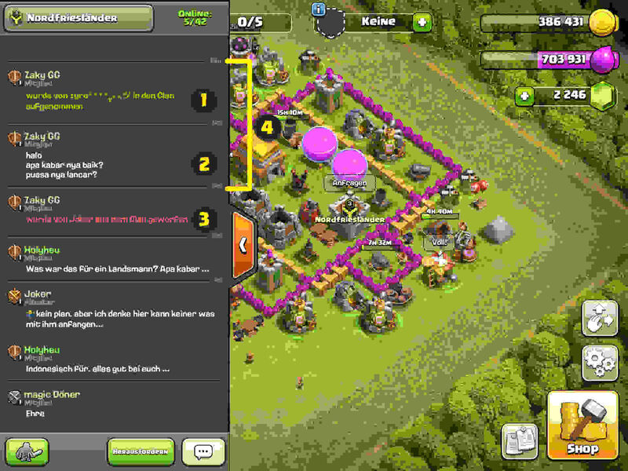

The User Holyheu tells a Story about his Experiences in the German Clan Nordfriesländer.
Nachdem ich heute vor genau einem Jahr am dem 4. April 2022 einen Bericht über meine ersten Erfahrungen mit dem Online-Spiel Clash of Clans veröffentlicht habe, ist nun ein weiteres Jahr vergangen.
Aus irgendeinem Grund habe ich mich von Anfang an für die Geschichte der Nordfriesländer interessiert, weshalb ich dann anfange, die Vorkommnisse mit Hilfe von Bildern und Videos zu dokumentieren.
Der allererste Screen-Shot ist vom Freitag, den 16. April 2021 um 01:53, wo man bereits meine erste Strategie sieht: Ich habe das Dorf ganz an den Rand gebaut, damit der Gegner “gezwungen” wird, von einer Seite anzugreifen:
Das Spiel hat ein Chat-Fenster, wo ich interessante Ereignisse festhalte und schon beim ersten Bild vom 16. April 2021 um 11:47 sieht man ein paar interessante Dinge:

Ein Spieler Namens Zaky-GG wird von Zyro in den Clan aufgenommen [1.1]. Der Kollege sagt etwas für mich Unverständliches [1.2] und wird deshalb anschließend von Joker aus dem Clan geworfen [1.3].
Der ausländische Kollege war zwar nur 16 Minuten [1.4] im Clan, aber schon in dieser kurzen Zeit habe ich etwas durch ihm dazugelernt.
Und sicher bekommen auch alle meine Clan-Kameraden heraus, was “Halo apa kabar nya baik? puasa nya lancar?” auf Deutsch bedeutet.
Ganz in diesem Sinne, mehr Inhalte nach dem Ende der Fastenzeit!
Gute N8!
Holyheu